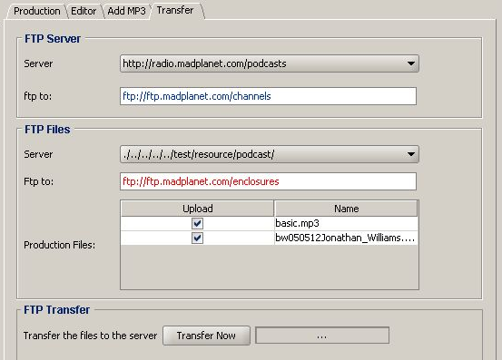

To publish the feed click on the link. Now a (production tab appears that looks like this:

The tab contains these elements:
| FTP Server Box | Where the feeds are published to |
| Server | Select a server from a list and it will be populated to the field below |
| ftp to: | Enter or adjust the FTP server URL |
| FTP Files Box | Where the podcasts are published to |
| Server | Select a server from a list and it will be populated to the field below |
| ftp to: | Enter or adjust the FTP server URL |
| FTP Transfer | Where the publication is happening |
| Transfer Now Button | Starts the publication process |
| Next Box | Indicates the process of the transfer |